Émulateurs et boutiques PC (Steam, Epic, GOG, EA, Ubisoft, Xbox, Riot) réunis, à la manette. Chaque jeu a sa fiche : son boîtier à faire tourner, son temps de jeu, ses succès.
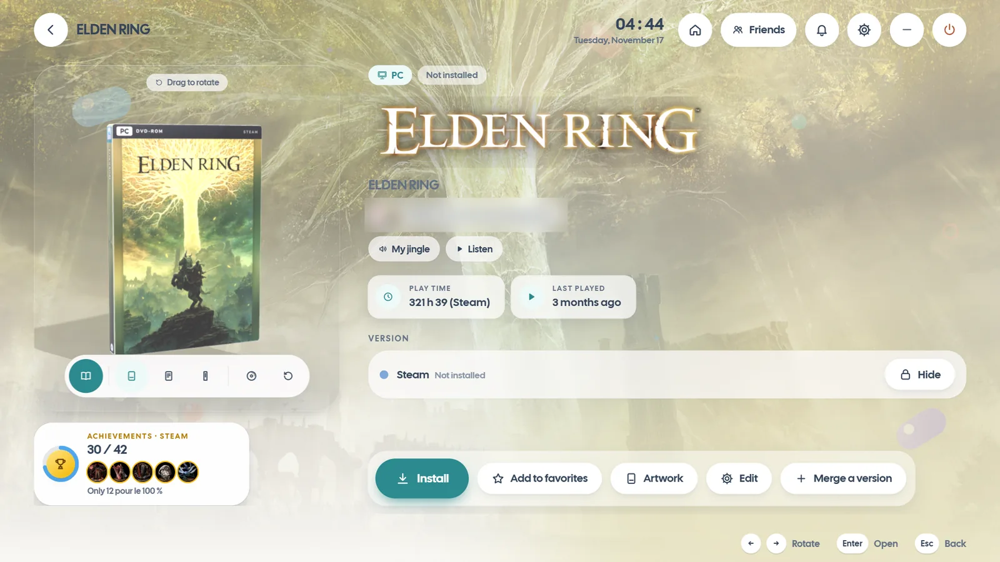
Consoles et PC réunis sur une étagère en 3D, dans leurs vrais boîtiers. iBox installe vos émulateurs, règle chaque jeu pour votre PC et vous laisse jouer à plusieurs, même à distance.

Ajoutez vos dossiers : iBox trouve vos jeux, leurs jaquettes et leurs manuels, puis les lance avec le bon émulateur et les bons réglages.
Émulateurs et boutiques PC (Steam, Epic, GOG, EA, Ubisoft, Xbox, Riot) réunis, à la manette. Chaque jeu a sa fiche : son boîtier à faire tourner, son temps de jeu, ses succès.

Choisissez une console : iBox Platforms télécharge l'émulateur recommandé depuis sa source officielle, vérifie le fichier et l'installe. iBox ne fournit jamais de jeux, de BIOS ni de clés.

Des réglages d'émulateur adaptés à votre PC et à chaque jeu, avec un aperçu exact avant chaque changement, une sauvegarde et le retour en arrière.

RetroAchievements et Steam dans une même salle : votre niveau, vos prochains objectifs, et les succès annoncés pendant la partie.
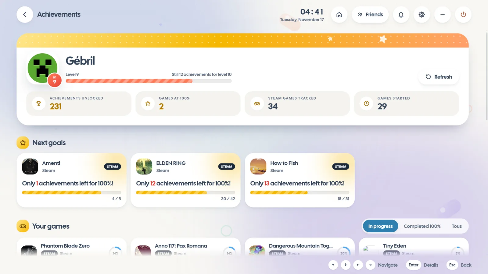
Éventail de boîtiers, grande image ou mosaïque, couleur, icône : chaque collection a son style. Posez-la où vous voulez et décorez l'accueil de logos, de personnages et de stickers animés.
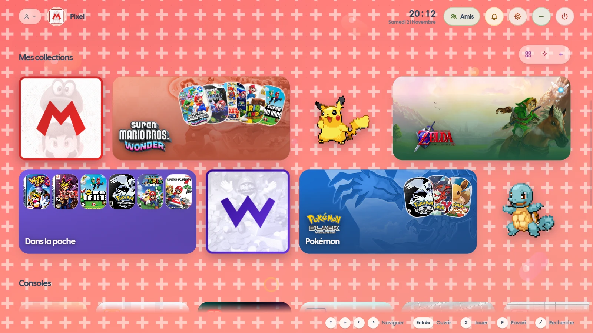
Passez le pointeur sur l'écran pour regarder de près.
Chaque console a son boîtier, modélisé pour iBox. Il s'ouvre, le disque ou la cartouche en sort. Dans l'application, il porte la jaquette de votre jeu.
Faites glisser l'étagère ou choisissez une console.
Fond d'écran, palette, collections, stickers : l'accueil se compose comme on veut. En voici douze, sur la même application. Choisissez un joueur : la page s'habille à ses couleurs.

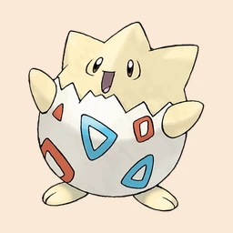
Joueuse cosy : fermes, pêche tranquille et puzzles du dimanche, sous un ciel du matin.
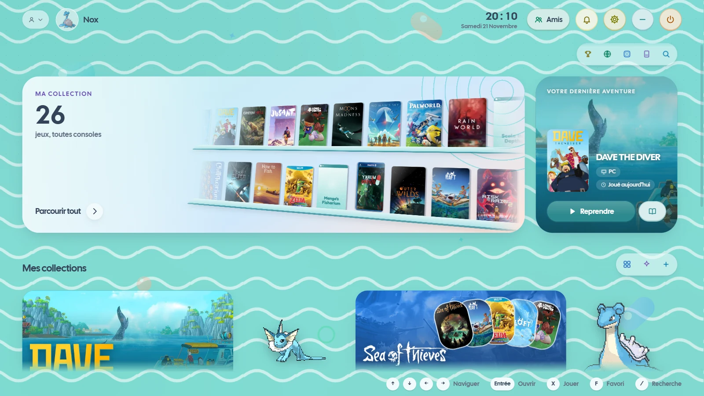
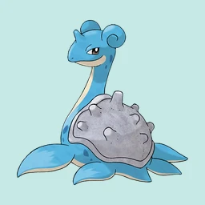
Plongeur et pirate : abysses, voiles au vent et parties de pêche, jusqu'aux étoiles.
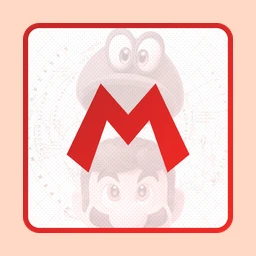
Nostalgique des cartouches : Mario, Wario, Hyrule et consoles de poche, en sprites animés.

Rêveuse de RPG : cristaux, tour par tour et ciels étoilés, sur fond de galaxie.
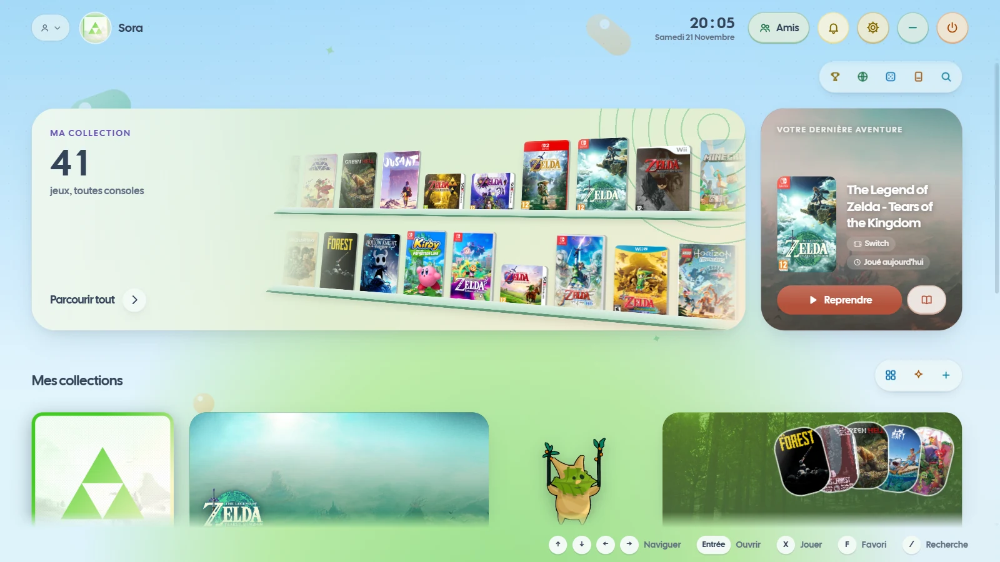
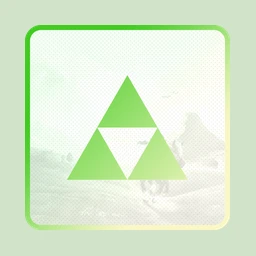
Aventurier des grands espaces : Hyrule, survie en forêt, sommets à gravir et monstres à chasser.

Cœur rose bonbon : mascottes toutes douces, duels de cartes et héros de shonen.
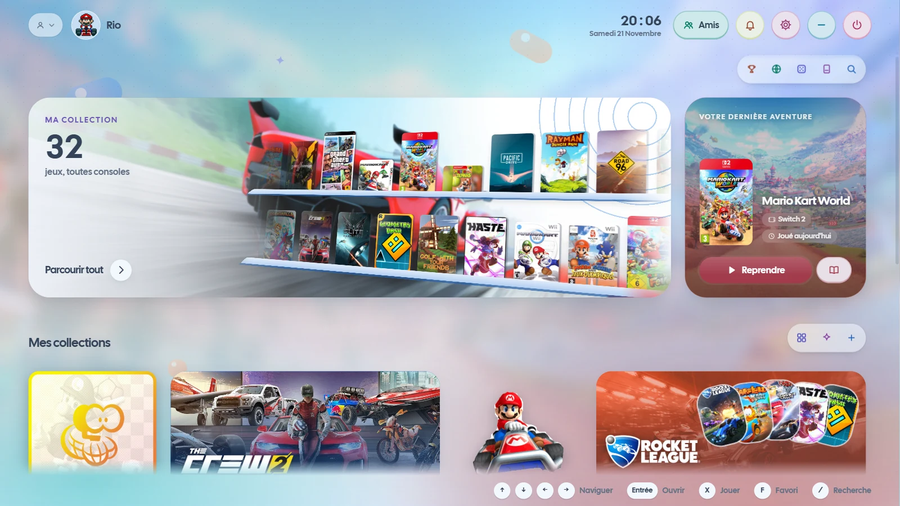
Pilote dans l'âme : karts, circuits, routes sans fin et sport du dimanche.
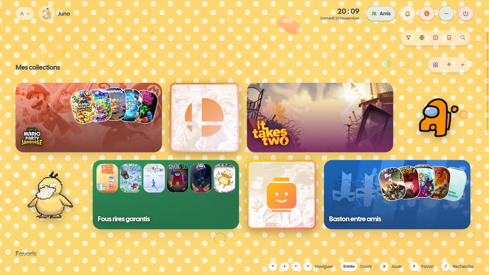
Reine des soirées : coop sur le canapé, mini-jeux, bastons entre amis et fous rires.

Amateur de frissons : survival horror, petites frayeurs et cassettes maudites, lumière éteinte.
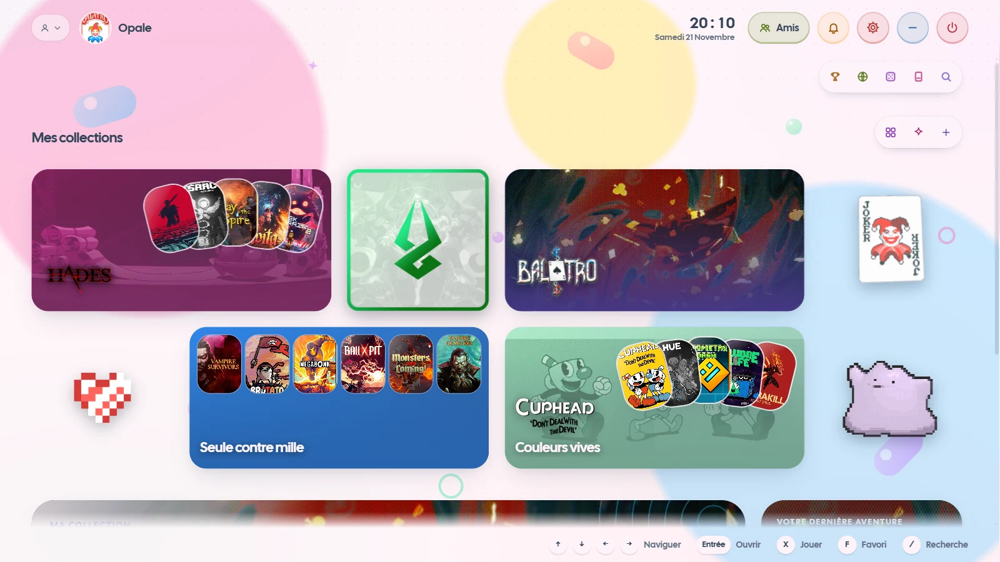
Accro aux « encore une partie » : roguelikes, jeux de cartes et indés aux couleurs acidulées.

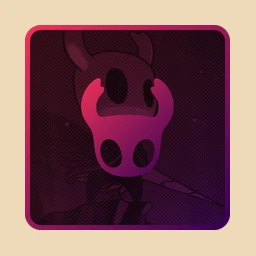
Chevalier têtu : feux de camp, parades au millimètre et boss recommencés cent fois.

Amoureuse des histoires : jeux narratifs, choix déchirants et grand spectacle, au coucher du soleil.
Accueils d'exemple : de vraies captures de l'application, avec de vrais jeux, composées pour cette page. Les pseudos sont inventés.
Elles recolorent tout iBox, boutons et fond compris. Choisissez-en une : cette page la prend aussi.

De l'Atari 2600 à la Switch 2, plus tous vos jeux PC.
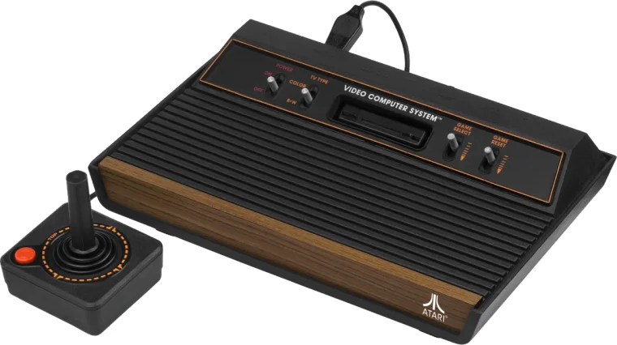

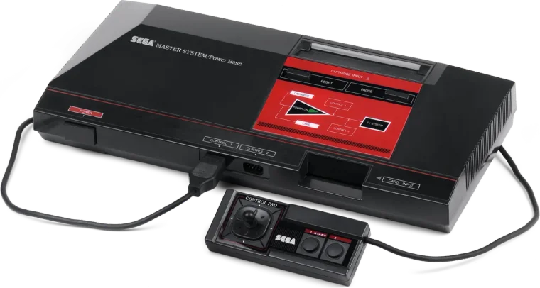
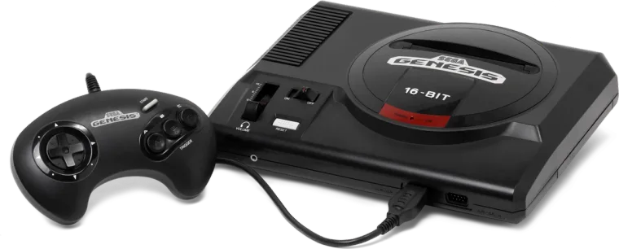

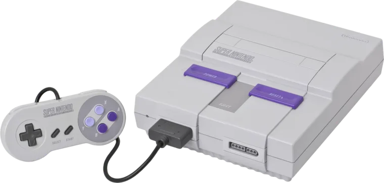


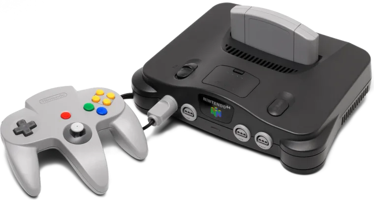

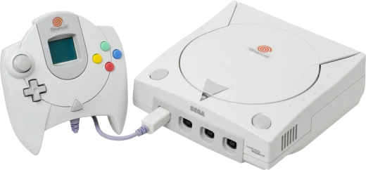
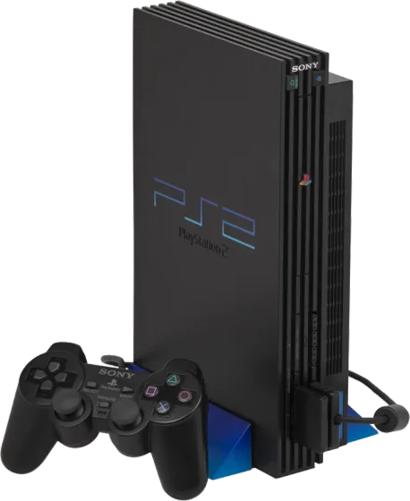

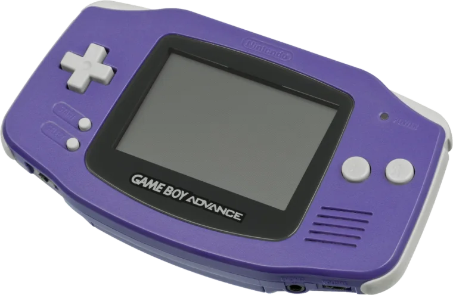
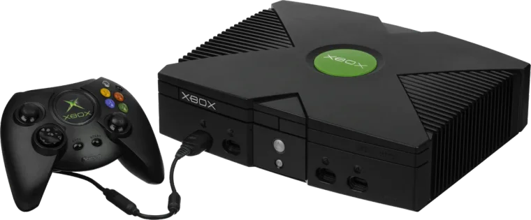

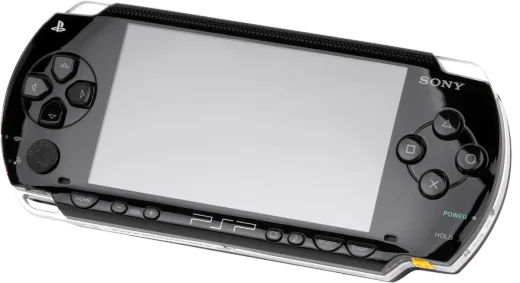

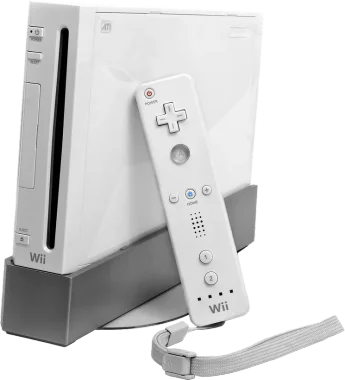


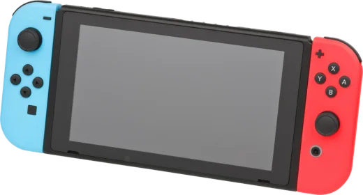
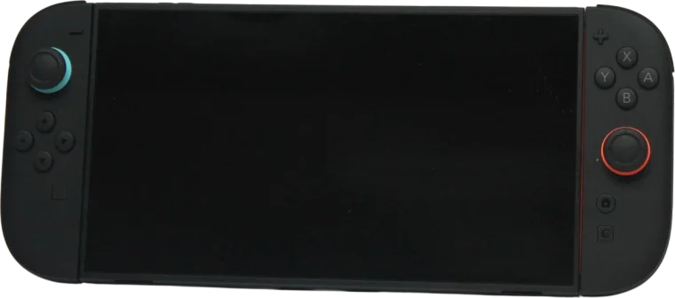
La même bibliothèque, dans vos mains : une version Linux pensée pour le Mode Jeu, à la manette, en plein écran.

En Mode Bureau, téléchargez le fichier .AppImage et rangez-le dans un dossier, par exemple Applications.
Clic droit › Propriétés › Permissions : cochez Est exécutable, puis ouvrez iBox.
Quittez Steam, puis Paramètres › Système › Ajouter iBox à Steam. En Mode Jeu, iBox vous attend dans votre bibliothèque.
Encore réservé à Windows : héberger une partie Remote Play, l'overlay en jeu et les boutiques sans version Linux (EA, Ubisoft, Xbox, Battle.net). La version Steam Deck se met à jour toute seule, comme sous Windows.
Sans droits administrateur, en quelques secondes. Les mises à jour arrivent ensuite toutes seules.
Profil, dossiers de jeux, émulateurs, boutiques PC : l'assistant explique tout.
Choisissez un jeu sur l'étagère, iBox s'occupe du reste.
Au premier lancement, Windows peut afficher « Windows a protégé votre ordinateur », car iBox est encore un logiciel récent. Cliquez sur Informations complémentaires, puis sur Exécuter quand même.
iBox ne fournit ni jeux, ni BIOS, ni clés : utilisez vos propres copies, possédées légalement. Les émulateurs viennent de leurs sources officielles. iBox n'est affilié à aucun fabricant ni éditeur ; les marques citées et les visuels de jeux visibles sur les captures appartiennent à leurs détenteurs.